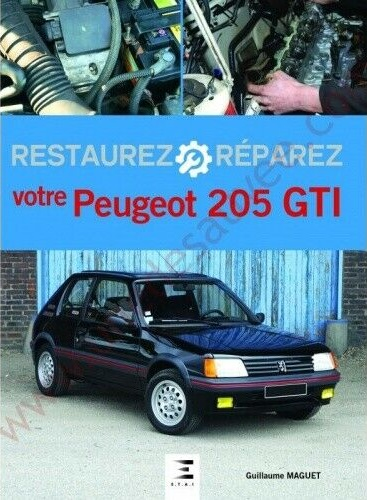
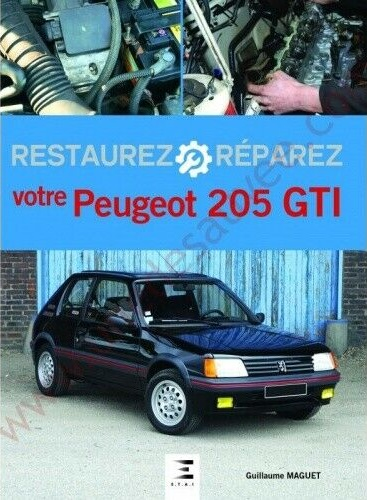

Expériences extra-professionnelles.
Compétences rédactionnelles.
Rédaction de trois livres sur l'automobile: Le guide de la 205 GTI/Rallye/T16, le guide de l'Alpine A310 et restaurez votre 205 GTI aux éditions ETAI. Choix et rédaction des sujets fait par moi-même, maquettage fait par l'éditeur.
De 2012 à 2018 rédacteur en chef de 205 magazine, un trimestriel uniquement dédié à la Peugeot 205. Nombre de numéros: du n°1 au n°23. Choix des sujets, prise de contact avec les propriétaires et photographies réalisés par moi-même.
Compétences photographiques.
Pratique de la photo numérique depuis 2008 avec un nikon D80 et depuis 2016 avec un Nikon D600 et plusieurs objectifs: Nikkor 24/120 f4, 50 f1,8 et Sigma 70/200 f2,8. Photos pour la réalisation d'un livre sur la restauration de la 205 GTI. Il s'agit à plus de 90% de photos techniques.

 



Expériences professionnelles.
2006-2022
Intérim et CDD dans le milieu industriel. Alkern: tri de pavés. PLastic Omnium: contrôle qualité des réservoirs. SMW: opérateur de production...
1996-2006
Mécanicien automobiles centre auto station marché puis Peugeot.
1989-1995
CAP/BEP/Bac professionnel mécanique bateaux de plaisance puis réparation automobiles